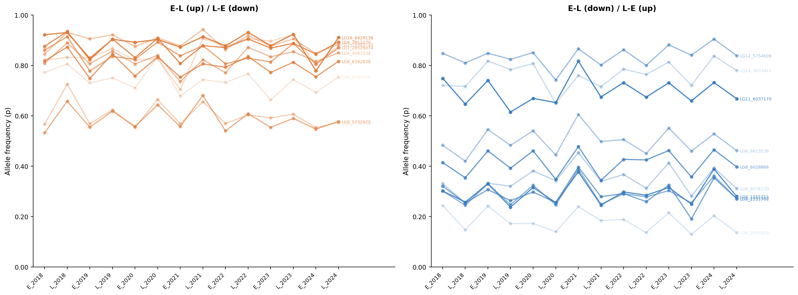
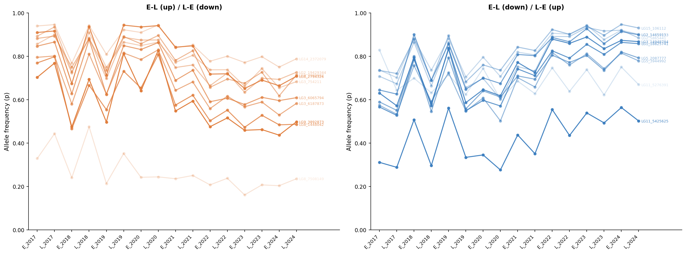

Allele frequency trajectories of SNPs showing consistent interseasonal fluctuation.
SNPs are classified into two categories:
- EL (up) / LE (down) (rises
from early to late season and resets the following spring)
- EL (down) / LE (up) (falls from early to
late season and recovers the following spring).
Darker opacity reflects higher dz mean, only top 10 highest dz mean are shown.

